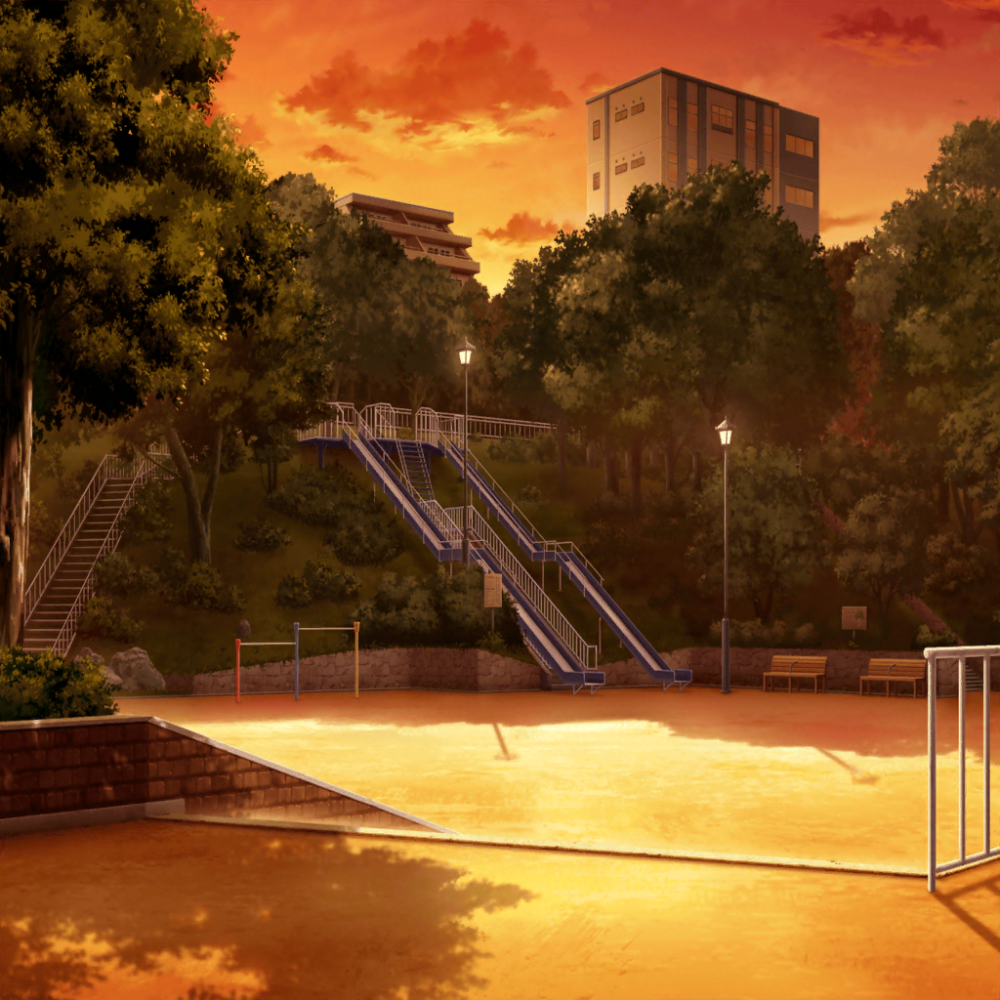

花咲川女子学園 校門前
香澄
おっはよーございます！
生徒会役員
…………
有咲
それやめろ。
つか、なんでギター弾きながら登校してんだよ！？
香澄
だって〜、嬉しくて！
生徒会役員
はい。私物は没収します
香澄
えー！ ギター、ダメなんですか！
生徒会役員
弾きながらとかありえないから。
放課後、生徒会室に取りに来てね
香澄
うう、そんな〜
りみ
……あ、香澄ちゃん
香澄
りみり〜ん！
ギター、取られちゃったよ〜！
りみ
う、うん。え、えっと……
香澄
あ、練習！
放課後、有咲のうちでしよ！
有咲
勝手に誘うな！
りみ
う……あの……ごめんなさいっ！
香澄
どうしたの？
りみ
やっぱり、バンドできない……！
香澄
え……？ なんでダメなの？
親にダメって言われた？
りみ
ううん！
香澄
誰かに脅されてる？
りみ
ううん！
香澄
じゃあ、やっぱり私とやるのが……
りみ
ち、違……その、ごめんなさい……！
香澄
あ、りみりん！

昼休み
花咲川女子学園 中庭
沙綾
牛込さん、来ないね
香澄
うーん、どうしちゃったんだろ、りみりん
沙綾
……あれ？ 市ヶ谷さん？
有咲
失礼。契約結んだんで
香澄
有咲が一緒に食べたいって
有咲
言ってねぇ
香澄
言った
有咲
そういう言い方はしてねぇ
沙綾
へえ、いつ仲良く……
有咲
なってないです
香澄
どうしよう有咲！
りみりん、なんでバンドダメなんだろ〜！
有咲
知らねーよ
香澄
ちゃんと考えてよ〜！
有咲
本人に聞けよ！
香澄
だって、ごめんしか言ってくれないしー
有咲
じゃー、そうなんだろー
香澄
有咲〜〜〜！！
有咲
うぜぇ！ うぜぇ！ うぜぇ！
香澄
卵焼きあげるから！
有咲
！ これはよくあるおかずの交換ってやつ……？
沙綾
あはは、市ヶ谷さん、面白いね
有咲
い、いや、今のは……
香澄
交換でもいいよ？
有咲
しねぇよ！
沙綾
あはは、ごめ……かわいい
有咲
かわいくないです！
放課後
りみ
…………
外国人観光客
Excuse me
りみ
えっ？
外国人観光客
Could you give me〜……
りみ
ええっ、どうしよう！
なんだか困ってるみたいだけど……
香澄
どうしたの？
りみ
香澄ちゃんっ！
香澄
おおー、外国の人！
香澄
ハロー！ アイムカスミ！
アイムギタリスト！
外国人観光客
What's？

公園
香澄
案内できてよかったね！
りみ
ありがとう……
私、すぐ固まっちゃうし、テンパっちゃってかっこ悪い……
りみ
香澄ちゃんはすごいね
香澄
え？ そうかな？
りみ
自己紹介とかバンドのこととか、
全部一生懸命で、楽しそうで……
りみ
香澄ちゃんがバンドに誘ってくれて嬉しかった。
でも、ステージに上がるのが怖くて
りみ
みんなに見られてると、
頭真っ白になって、動けなくなっちゃう
りみ
お姉ちゃんみたいにカッコよくできない。
間違えたら、迷惑かけちゃう。きっとガッカリさせちゃう
香澄
そっか……
りみ
ごめんね
香澄
ううん、りみりんとまた話せてよかった！
りみ
香澄ちゃん……
りみ
あ、あのね、今度お姉ちゃん……グリグリのライブがあるの。
よかったら、香澄ちゃん達も来て
香澄
ゆりさんの！
わあ、行く行く！ 絶対行くよ！
香澄
……あれ？
でも今、３年生は修学旅行で沖縄に行ってなかったっけ？
りみ
うん、帰ってくる日がちょうどライブの日なんだ。
他にもたくさんバンドが出るイベントだから楽しいよ
香澄
うん、楽しみにしてるね！